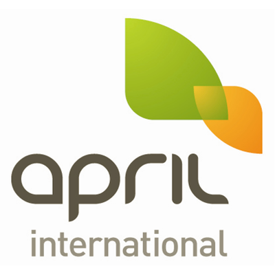
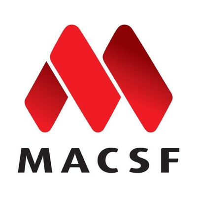
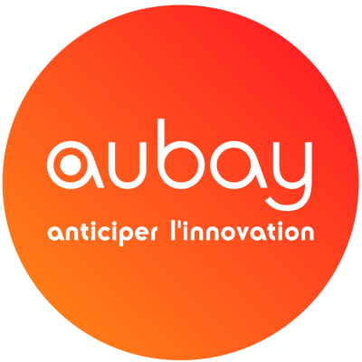

Joseph Dayssol
|
Experience. Precision. Excellence.
With bachelor and master degrees in Computer Systems, I have accumulated more than 15 years of development experience (Java, JavaScript, C# and their ecosystems). In 2010 he completed further studies in management, which gives me a great deal of extra value due to his good business understanding. After that I worked in an agile sub-team of 5 developers responsible for building software in the insurance and risk management industries, utilizing : Java 11, C#, Javascript,Spring Boot, Git, Maven, Hibernate.
Engineering With Style.
15 years of experience in software and web development using object oriented languages for IT companies, insurances and banks.
French
English
German
Recognised for:
- Being adaptable and flexible.
- Problem solving oriented.
- Team worker.
- Computer Enthusiast.
Education
University Paris-Sorbonne : MBA - Master of Enterprise Administration.
University Pasquale Paoli, Corsica : Master degree in computer science.
-
Lead Software engineer
Feb. 2019 - actual position - Hamburg
Wibas IO is a IT company located in Hamburg.
App engineer - Starting from scratch, free choice of the architecture and technology.
Tasks and achievements:
Construction of the CI/ CD chain using Gitlab and Heroku.
Implementation of the back office website using Angular and of the backend using Java/Springboot.
Implementation of the API to communicate with tax office (Elster).
Implementation of unit tests using SpringBootTest and of integration tests using Postman.
Angular 7
SpringBoot
Java
PostMan
MongoDB
Maven
GitLab
Heroku
-
Software engineer
Jan. 2014 - Feb. 2019 - Paris
Effisoft delivers software solutions to the Insurance, Reinsurance and Risk Management industries worldwide.
As member of the front-end team of the software Webxl, I was in charge of developing new functionalities, fixing defects and deploying builds in internal environment.
Tasks and achievements:
Application maintenance of the software Webxl - front and back end using the technologies Silverlight, Java, Hibernate
SCRUM (Agile) team work according to customer requirements – conduction of meetings with product owner – cost estimate – sprint evaluation – development – testing – delivery
Delivery process with framework Maven, Jenkins
Fixes of defects / Test scenario redaction
Java
C#
PL-SQL
Vue.js
Hibernate
-

E-commerce developer
April. 2012 - Dec. 2013 - ParisApril International is an e-commerce insurance broker.
I implemented new insurance products subscription for the e-commerce international website providing dynamic pricing and supplying the insurance administration software.Tasks and achievements:
Application maintenance of existing subscription system and development of new subscription website, resulting in a 20% increase of sales revenues on the web channel.
Sustainable reform of quote and certificate generation in multiple languages.
Efficient fix of production defects according to the contractual provisions of short-time customer requests, providing reliable on-time-delivery.
Java
Struts
EJB 3.0
Hibernate
-
Software developer
Jan. 2011 - May. 2012 - ParisSungard is a IT consulting company. I worked for BNP and Banque Populaire.
Mission for BNP: I implemented from scratch a software to manage loans, applying CMMI and quality standards.The team consisted of three developers, one database architect and one project manager. The team applied CMMI and the quality standards of BNP CIB.Tasks and achievements:
Development of responsive pages and of high-volume withstanding back-end, applying design patterns, defensive and interface programming, increasing the competence of the team with respect to various technologies and resulting in the integration of quality standards at the development level.
The reliable on-time-delivery within short deadlines allowed the customer to shift Excel files to a powerful and secure web application.
Java
Javascript
Struts
Hibernate
Jquery
CSS
XHTML
Mission for Banque Populaire: Product owner and integration testing engineer Redesign of web site of Banque Populaire, applying SharePoint 2010 and C# specific development.
Redesign of web site of Banque Populaire, applying SharePoint 2010 and C# specific development. The team in charge of the project applied SCRUM.Tasks and achievements:
Preparation and conduction of meetings with managing directors in Nantes elaborating on client’s needs and defining potential strategies with regard to the envisaged redesign of the website of Banque Populaire.
Drafting of user story and technical documentation successfully implemented by the developers.
Acquisition of SCRUM methodology, which significantly improved the visibility of the respective status of the project.
Continuous integration resulted in reduced defects.
C#
Sharepoint
Hudson
-

Java developer
Aug. 2007 - Jan. 2011 - ParisMACSF is a health insurance.
Development of internal software for accounting, loss and savings in the context of technology shift from Cobol to JSP interfaces.
Development of the client’s subscription web site using .NET.Tasks and achievements:
Development of new software interfaces which highly improved the user experience and performance.
Development of generation tools, drafting of documentation and providing java training to Cobol developers, resulting in a sustainable integration of the technology change.
Development of the life insurance web site and health care web site Libéa using .NET, resulting in an innovative and efficient channel of subscription on the web.
Java
C#
Struts
Cobol
-

Junior developer
Oct. 2005 - Jun. 2008 - ParisAubay is a IT consulting company.
I worked on differents development missions ( J2EE - C# - PHP - C++) for clients :Orange, France Telecom, Accor, Veolia.
Java
C#
PHP
C++
Anna Léa Lesage
I've worked together with Joseph on a small project.
He onboarded me very well on this project which mixed many different technologies (google cloud, firebase and Angular cli).
He explained the interconnections very well showing a high understanding of the technologies used.
Timothe Coger
Joseph is a qualified and talentuous person to solve issues and rebuild technical architectures. It was a real pleasure to work with him.
Cristiano Diniz Pinto
Joseph is a high-level java backend developer; I had the opportunities to receive advice from him in a java backend application, and he guided me through the best practices for implementing test unit and java architecture. He is always looking for improvements and searching for opportunities to share his knowledge with others.
Joseph is also transparent and trustable; that makes him a good match for work together.